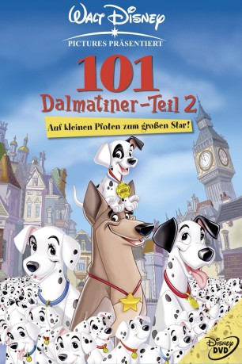

#4662 101 Dalmatiner - Teil 2: Auf kleinen Pfoten zum großen Star!
Alternativ: 101 Dalmatians 2: Patch's London Adventure (Englischer Titel)
 
 IMDB-Wertung: 5.7 / 10
IMDB-Wertung: 5.7 / 10  Metascore: 0
Metascore: 0 
Der kleine Dalmatiner Pogo kommt sich völlig unwichtig als einer unter 101 schwarzgefleckten Geschwistern vor. Prompt wird er im Trubel des Umzugs vergessen. Währenddessen denkt Cruella mitnichten daran, ihre Leidenschaft für schwarz-weiß gefleckte Pelze zu unterdrücken. Mit Hilfe eines schmierigen, ehrgeizigen Künstlers lässt sie die Dalmatiner-Familie einfangen, um ihnen das Fell über die Ohren zu ziehen und daraus einen Mantel zu fertigen. Nur der vergessene Pogo bleibt in Freiheit und versucht seine Familie vor dem Schlachtermesser zu retten.
Jahr: 2003
Dauer: 73 Minuten
FSK: 0
Land: USA Studio: Walt Disney Home VideoTonspuren: DTS - ,
Untertitel: Englisch,
Auflösung: 1080p (1920x1080) Größe: 4659 MB
Genre: Komödie, Abenteuer, Animation/Trick, Familie, Musical
Regisseur: Jim Kammerud, Brian Smith
Drehbuch: Jane Espenson
Soundtrack:
Darsteller:
Datei: X:\Kinder Disney HD\101 Dalmatiner\101 Dalmatiner - Teil 2 Auf kleinen Pfoten zum großen Star! (2003, FSK0, 1920x1080).mkv seit 02.11.2016
Festplatte: Kinder-Filme+Trick
 Es gibt insgesamt 7 Filme in der Gruppe 'Kinder Disney HD\101 Dalmatiner'
Es gibt insgesamt 7 Filme in der Gruppe 'Kinder Disney HD\101 Dalmatiner'